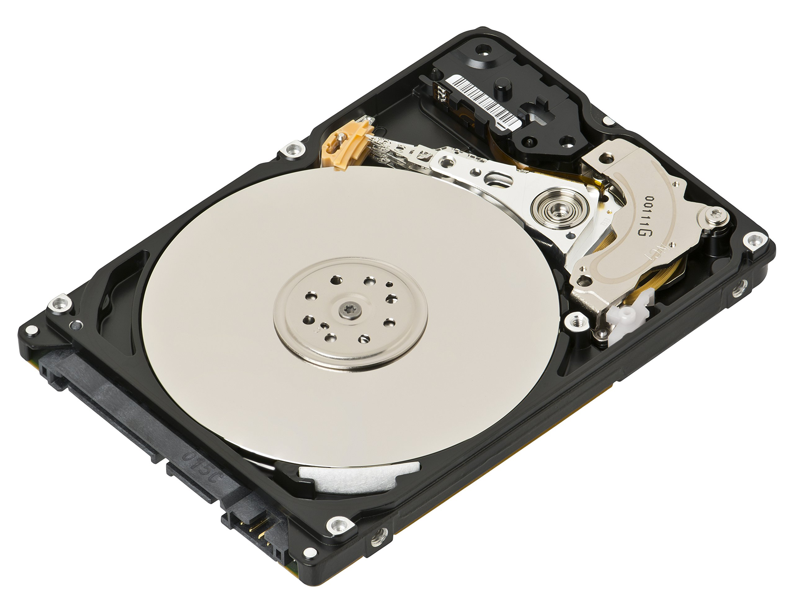

HDD (Hard Disk Drive)

An HDD, or Hard Disk Drive, is a storage device that uses spinning disks to save and retrieve data. It has been a reliable storage option for decades. Today, HDDs are still widely used because they are affordable and can store large amounts of data, making them ideal for personal computers, servers, and backup systems.
History of HDDs
The first HDD was introduced by IBM in 1956. It was huge and could only store a small amount of data. Over time, HDDs became smaller, cheaper, and capable of storing terabytes of data. Modern HDDs are compact, efficient, and continue to be a cost-effective storage solution compared to SSDs.
How HDDs Work
HDDs store data on spinning magnetic disks called platters. A small head moves over the platters to read or write data. Modern HDDs spin at speeds of 5,400 to 7,200 RPM for regular use, while high-performance models can reach up to 15,000 RPM. This allows quick access to stored data, though not as fast as SSDs.
HDDs are designed to handle large files and are often used for storing videos, photos, and backups. They are reliable for long-term storage and are compatible with most devices.
Components of an HDD
- Platters: Disks coated with magnetic material where data is stored.
- Spindle: The motor that spins the platters at high speeds.
- Read/Write Heads: Tiny heads that move over the platters to read or write data.
- Actuator Arm: The arm that positions the read/write heads over the correct part of the platter.
- Controller: Manages data transfer between the computer and the HDD, and controls the movement of the actuator arm.
Advantages of HDDs
- Affordability: HDDs are cheaper than SSDs, making them great for storing large amounts of data.
- Large Storage Capacities: Modern HDDs can store up to 20 terabytes or more, perfect for backups and media storage.
- Wide Compatibility: HDDs work with most computers, laptops, and external storage systems.
Disadvantages of HDDs
- Slower Speed: HDDs are slower than SSDs because they rely on moving parts.
- Durability: Moving parts make HDDs more prone to damage from drops or shocks.
- Noisy Operation: The spinning disks and moving parts can create noise during use.
Applications of HDDs
- Personal Computers: Used for storing operating systems, games, and personal files.
- Servers and Data Centers: Ideal for storing large amounts of data at a low cost.
- External Storage: Popular for backups and portable storage solutions.
- Surveillance Systems: Used in security cameras and DVRs to store video footage.
Popular HDD Manufacturers
- Seagate: Known for high-capacity and reliable HDDs for personal and enterprise use.
- Western Digital (WD): Offers a wide range of HDDs, including models for gaming and data centers.
- Toshiba: Produces durable and efficient HDDs for various applications.
Conclusion
HDDs remain a popular choice for affordable and large-scale storage. While SSDs are faster, HDDs are still widely used for backups, media storage, and systems requiring high capacity. They are a reliable and economical solution for both personal and professional needs.